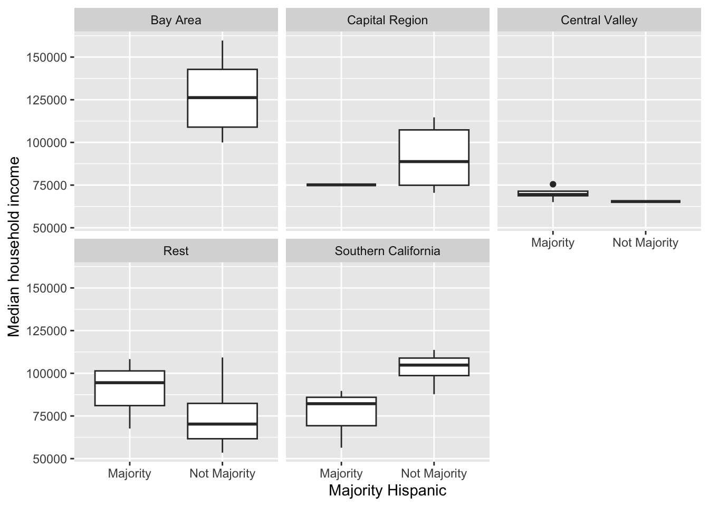
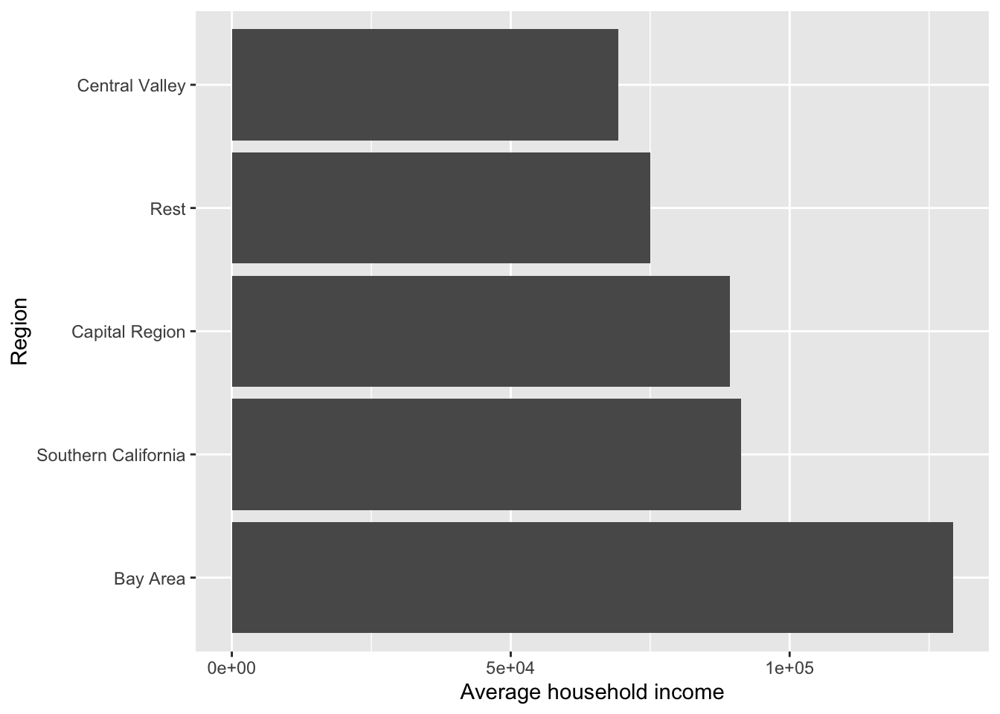

Lab 3 In Class
Peter James
2025-04-17
Lab 3
library(sf)
library(MapGAM)
library(tidyverse)
library(tidycensus)
library(tidygeocoder)
library(flextable)
library(tmap)Download Census data using tidycensus
census_api_key("YOUR API KEY GOES HERE", install = TRUE)Get ACS data
acs2023 <- load_variables(2023, "acs5", cache = TRUE)
View(acs2023)Get race/ethnicity for CA counties
ca <- get_acs(geography = "county",
year = 2023,
variables = c(tpopr = "B03002_001",
nhwhite = "B03002_003", nhblk = "B03002_004",
nhasn = "B03002_006", hisp = "B03002_012"),
state = "CA",
survey = "acs5",
output = "wide")Look at our data
glimpse(ca)## Rows: 58
## Columns: 12
## $ GEOID <chr> "06001", "06003", "06005", "06007", "06009", "06011", "06013"…
## $ NAME <chr> "Alameda County, California", "Alpine County, California", "A…
## $ tpoprE <dbl> 1651949, 1695, 41029, 209470, 45995, 21895, 1161458, 27293, 1…
## $ tpoprM <dbl> NA, 234, NA, NA, NA, NA, NA, NA, NA, NA, NA, NA, NA, NA, NA, …
## $ nhwhiteE <dbl> 466445, 993, 30234, 139527, 35599, 6869, 455961, 16668, 14254…
## $ nhwhiteM <dbl> 1170, 215, 341, 767, 318, 133, 1843, 199, 589, 979, 75, 554, …
## $ nhblkE <dbl> 159042, 0, 781, 3550, 529, 311, 94864, 805, 1522, 42060, 158,…
## $ nhblkM <dbl> 1736, 14, 143, 393, 140, 44, 1594, 123, 232, 1334, 126, 271, …
## $ nhasnE <dbl> 528377, 8, 587, 11010, 1066, 101, 212373, 821, 9640, 108809, …
## $ nhasnM <dbl> 2269, 8, 129, 497, 238, 159, 2008, 264, 416, 1332, 182, 403, …
## $ hispE <dbl> 385245, 249, 6361, 40829, 6403, 13639, 316799, 5350, 27230, 5…
## $ hispM <dbl> NA, 115, NA, NA, NA, NA, NA, NA, NA, NA, NA, NA, NA, NA, NA, …head(ca)## # A tibble: 6 × 12
## GEOID NAME tpoprE tpoprM nhwhiteE nhwhiteM nhblkE nhblkM nhasnE nhasnM hispE
## <chr> <chr> <dbl> <dbl> <dbl> <dbl> <dbl> <dbl> <dbl> <dbl> <dbl>
## 1 06001 Alam… 1.65e6 NA 466445 1170 159042 1736 528377 2269 385245
## 2 06003 Alpi… 1.69e3 234 993 215 0 14 8 8 249
## 3 06005 Amad… 4.10e4 NA 30234 341 781 143 587 129 6361
## 4 06007 Butt… 2.09e5 NA 139527 767 3550 393 11010 497 40829
## 5 06009 Cala… 4.60e4 NA 35599 318 529 140 1066 238 6403
## 6 06011 Colu… 2.19e4 NA 6869 133 311 44 101 159 13639
## # ℹ 1 more variable: hispM <dbl>Set Working Directory
setwd("/Users/pjames1/Dropbox/UC Davis Folders/SPH 215 GIS and Public Health/Github_Website/SPH215/")
getwd()## [1] "/Users/pjames1/Dropbox/UC Davis Folders/SPH 215 GIS and Public Health/Github_Website/SPH215"Read in ca.pm
ca.pm <- read_csv("PolicyMap Data 2025-03-27 192555 UTC.csv", skip = 1)glimpse(ca.pm)## Rows: 58
## Columns: 10
## $ GeoID_Description <chr> "County", "County", "County", "County", "County", "C…
## $ GeoID_Name <chr> "Alameda", "Alpine", "Amador", "Butte", "Calaveras",…
## $ SitsinState <chr> "CA", "CA", "CA", "CA", "CA", "CA", "CA", "CA", "CA"…
## $ GeoID <chr> "06001", "06003", "06005", "06007", "06009", "06011"…
## $ GeoID_Formatted <chr> "=\"06001\"", "=\"06003\"", "=\"06005\"", "=\"06007\…
## $ mhhinc <dbl> 126240, 110781, 81526, 68574, 79877, 75149, 125727, …
## $ TimeFrame <chr> "2019-2023", "2019-2023", "2019-2023", "2019-2023", …
## $ GeoVintage <dbl> 2022, 2022, 2022, 2022, 2022, 2022, 2022, 2022, 2022…
## $ Source <chr> "Census", "Census", "Census", "Census", "Census", "C…
## $ Location <chr> "California (State)", "California (State)", "Califor…Prep to merge
class(ca.pm$GeoID)## [1] "character"class(ca$GEOID)## [1] "character"Merge
cacounty <- ca %>%
left_join(ca.pm, by = c("GEOID" = "GeoID")) %>%
mutate(pwhite = nhwhiteE/tpoprE, pasian = nhasnE/tpoprE,
pblack = nhblkE/tpoprE, phisp = hispE/tpoprE,
mhisp = case_when(phisp > 0.5 ~ "Majority",
TRUE ~ "Not Majority")) %>%
rename(County = GeoID_Name) %>%
select(GEOID, County, pwhite, pasian, pblack, phisp, mhisp, mhhinc)
glimpse(cacounty)## Rows: 58
## Columns: 8
## $ GEOID <chr> "06001", "06003", "06005", "06007", "06009", "06011", "06013", …
## $ County <chr> "Alameda", "Alpine", "Amador", "Butte", "Calaveras", "Colusa", …
## $ pwhite <dbl> 0.28236041, 0.58584071, 0.73689342, 0.66609538, 0.77397543, 0.3…
## $ pasian <dbl> 0.319850673, 0.004719764, 0.014306954, 0.052561226, 0.023176432…
## $ pblack <dbl> 0.0962753693, 0.0000000000, 0.0190353165, 0.0169475343, 0.01150…
## $ phisp <dbl> 0.2332064, 0.1469027, 0.1550367, 0.1949157, 0.1392108, 0.622927…
## $ mhisp <chr> "Not Majority", "Not Majority", "Not Majority", "Not Majority",…
## $ mhhinc <dbl> 126240, 110781, 81526, 68574, 79877, 75149, 125727, 66780, 1061…Save datasets
write_csv(cacounty, "lab2_file.csv")Exploratory data analysis
cacounty %>%
summarize(Mean = mean(mhhinc))## # A tibble: 1 × 1
## Mean
## <dbl>
## 1 87001.cacounty %>%
summarize(Mean = mean(mhhinc), SD = sd(mhhinc))## # A tibble: 1 × 2
## Mean SD
## <dbl> <dbl>
## 1 87001. 25547.cacounty <- cacounty %>%
mutate(region = case_when(County == "Sonoma" | County == "Napa" |
County == "Solano" | County == "Marin" |
County == "Contra Costa" | County == "San Francisco" |
County == "San Mateo" | County == "Alameda" |
County == "Santa Clara" ~ "Bay Area",
County == "Imperial" | County == "Los Angeles" |
County == "Orange" | County == "Riverside" |
County == "San Diego" | County == "San Bernardino" |
County == "Ventura" ~ "Southern California",
County == "Fresno" | County == "Madera" |
County == "Mariposa" | County == "Merced" |
County == "Tulare" |
County == "Kings" ~ "Central Valley",
County == "Alpine" | County == "Colusa" |
County == "El Dorado" | County == "Glenn" |
County == "Placer" | County == "Sacramento" |
County == "Sutter" | County == "Yolo" |
County == "Yuba" ~ "Capital Region",
TRUE ~ "Rest"))Mean median household income by region
cacounty %>%
group_by(region) %>%
summarize(Mean = mean(mhhinc))## # A tibble: 5 × 2
## region Mean
## <chr> <dbl>
## 1 Bay Area 129297.
## 2 Capital Region 89288.
## 3 Central Valley 69265.
## 4 Rest 74959.
## 5 Southern California 91332.cacounty %>%
group_by(region) ## # A tibble: 58 × 9
## # Groups: region [5]
## GEOID County pwhite pasian pblack phisp mhisp mhhinc region
## <chr> <chr> <dbl> <dbl> <dbl> <dbl> <chr> <dbl> <chr>
## 1 06001 Alameda 0.282 0.320 0.0963 0.233 Not Majority 126240 Bay Area
## 2 06003 Alpine 0.586 0.00472 0 0.147 Not Majority 110781 Capital …
## 3 06005 Amador 0.737 0.0143 0.0190 0.155 Not Majority 81526 Rest
## 4 06007 Butte 0.666 0.0526 0.0169 0.195 Not Majority 68574 Rest
## 5 06009 Calaveras 0.774 0.0232 0.0115 0.139 Not Majority 79877 Rest
## 6 06011 Colusa 0.314 0.00461 0.0142 0.623 Majority 75149 Capital …
## 7 06013 Contra Costa 0.393 0.183 0.0817 0.273 Not Majority 125727 Bay Area
## 8 06015 Del Norte 0.611 0.0301 0.0295 0.196 Not Majority 66780 Rest
## 9 06017 El Dorado 0.741 0.0501 0.00791 0.142 Not Majority 106190 Capital …
## 10 06019 Fresno 0.270 0.108 0.0416 0.541 Majority 71434 Central …
## # ℹ 48 more rowscacounty %>%
group_by(region) %>%
summarize(Mean = mean(mhhinc),
Median = median(mhhinc),
SD = sd(mhhinc),
Correlation = cor(mhhinc, phisp))## # A tibble: 5 × 5
## region Mean Median SD Correlation
## <chr> <dbl> <dbl> <dbl> <dbl>
## 1 Bay Area 129297. 126240 22246. -0.620
## 2 Capital Region 89288. 88724 17295. -0.788
## 3 Central Valley 69265. 69120. 3918. 0.423
## 4 Rest 74959. 71931 15803. 0.606
## 5 Southern California 91332. 89672 19132. -0.951cacounty %>%
group_by(mhisp) %>%
summarize(n = n()) %>%
mutate(freq = n / sum(n))## # A tibble: 2 × 3
## mhisp n freq
## <chr> <int> <dbl>
## 1 Majority 12 0.207
## 2 Not Majority 46 0.793summary(cacounty)## GEOID County pwhite pasian
## Length:58 Length:58 Min. :0.09421 Min. :0.00000
## Class :character Class :character 1st Qu.:0.31535 1st Qu.:0.01888
## Mode :character Mode :character Median :0.49018 Median :0.04404
## Mean :0.50723 Mean :0.07748
## 3rd Qu.:0.66599 3rd Qu.:0.08630
## Max. :0.88832 Max. :0.39306
## pblack phisp mhisp mhhinc
## Min. :0.000000 Min. :0.05892 Length:58 Min. : 53498
## 1st Qu.:0.009634 1st Qu.:0.15611 Class :character 1st Qu.: 67888
## Median :0.016844 Median :0.27110 Mode :character Median : 80702
## Mean :0.028112 Mean :0.32170 Mean : 87001
## 3rd Qu.:0.033734 3rd Qu.:0.46747 3rd Qu.:102701
## Max. :0.125967 Max. :0.85579 Max. :159674
## region
## Length:58
## Class :character
## Mode :character
##
##
## cacounty %>%
group_by(region) %>%
summarize(Mean = mean(mhhinc),
Median = median(mhhinc),
SD = sd(mhhinc),
Correlation = cor(mhhinc, phisp))## # A tibble: 5 × 5
## region Mean Median SD Correlation
## <chr> <dbl> <dbl> <dbl> <dbl>
## 1 Bay Area 129297. 126240 22246. -0.620
## 2 Capital Region 89288. 88724 17295. -0.788
## 3 Central Valley 69265. 69120. 3918. 0.423
## 4 Rest 74959. 71931 15803. 0.606
## 5 Southern California 91332. 89672 19132. -0.951region.summary <- cacounty %>%
group_by(region) %>%
summarize(Mean = mean(mhhinc),
Median = median(mhhinc),
SD = sd(mhhinc),
Correlation = cor(mhhinc, phisp))Flextable
my_table <- flextable(region.summary)
my_tableregion | Mean | Median | SD | Correlation |
|---|---|---|---|---|
Bay Area | 129,297.33 | 126,240.0 | 22,246.495 | -0.6196837 |
Capital Region | 89,287.78 | 88,724.0 | 17,294.860 | -0.7878129 |
Central Valley | 69,265.17 | 69,119.5 | 3,918.442 | 0.4231022 |
Rest | 74,958.74 | 71,931.0 | 15,803.202 | 0.6064605 |
Southern California | 91,331.86 | 89,672.0 | 19,131.821 | -0.9513650 |
class(my_table)## [1] "flextable"Let’s make it prettier
my_table <- my_table %>%
set_header_labels(
region = "Region",
Mean = "Mean",
Median = "Median",
SD = "Standard Deviation",
Correlation = "Correlation") %>%
flextable::align(align = "center", part = "all")
my_tableRegion | Mean | Median | Standard Deviation | Correlation |
|---|---|---|---|---|
Bay Area | 129,297.33 | 126,240.0 | 22,246.495 | -0.6196837 |
Capital Region | 89,287.78 | 88,724.0 | 17,294.860 | -0.7878129 |
Central Valley | 69,265.17 | 69,119.5 | 3,918.442 | 0.4231022 |
Rest | 74,958.74 | 71,931.0 | 15,803.202 | 0.6064605 |
Southern California | 91,331.86 | 89,672.0 | 19,131.821 | -0.9513650 |
save_as_image(my_table, path = "reg_income.png")## [1] "reg_income.png"cacounty %>%
ggplot() +
geom_histogram(mapping = aes(x=mhhinc), bins=10) +
xlab("Median household income")
Boxplot
cacounty %>%
ggplot() +
geom_boxplot(mapping = aes(y = mhhinc)) +
ylab("Median household income")
By group
cacounty %>%
ggplot() +
geom_boxplot(mapping = aes(x = mhisp, y = mhhinc)) +
xlab("Majority Hispanic") +
ylab("Median household income")Facet Wrap
cacounty %>%
ggplot() +
geom_boxplot(mapping = aes(x = mhisp, y = mhhinc)) +
xlab("Majority Hispanic") +
ylab("Median household income") +
facet_wrap(~region)  Bar chart
cacounty %>%
group_by(region) %>%
summarize(Mean = mean(mhhinc)) %>%
ggplot(aes(x=region, y = Mean)) +
geom_bar(stat = "Identity") +
xlab("Region") +
ylab("Median household income")cacounty %>%
group_by(region) %>%
summarize(Mean = mean(mhhinc)) %>%
ggplot(aes(x=reorder(region, -Mean), y = Mean)) +
geom_bar(stat = "Identity") +
xlab("Region") +
ylab("Average household income")cacounty %>%
group_by(region) %>%
summarize(Mean = mean(mhhinc)) %>%
ggplot(aes(x=reorder(region, -Mean), y = Mean)) +
geom_bar(stat = "Identity") +
xlab("Region") +
ylab("Average household income") +
coord_flip()